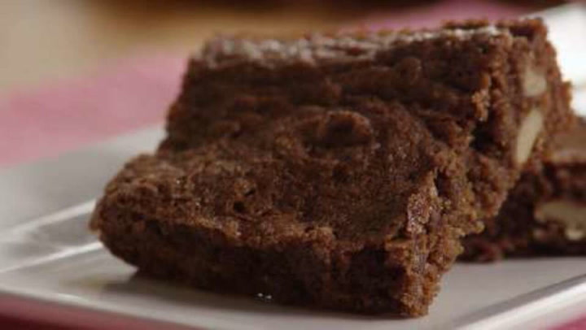

Easy Brownies

Introduction
Who doesn't love brownies? Whip up amazing brownies from scratch in just 30 minutes following this recipe.
Ingredients
- 2 cups of white sugar
- 1½ cups of all-purpose flour
- 1 cup melted butter
- 4 eggs
- ½ cup of cocoa powder
- 1 teaspoon vanilla extract
- ½ teaspoon baking powder
- ½ teaspoon salt
- ½ cup of walnut halves
Directions
- Preheat the oven to 375°F (175°C). Grease your 9x13-inch pan.
- Mix flour, sugar, melted butter, eggs, cocoa power, vanilla extract, baking powder, and salt in a large mixing bowl until completely combined. Spread batter out in your greased pan, and pour over walnut halves.
- Bake in oven until top is dry, and the edges begin to pull away from the sides of the pan. This can take between 20 and 30 minutes. Allow to cool before slicing.
Enjoy! Remember, practice makes perfect.
Back to the Recipes Homepage